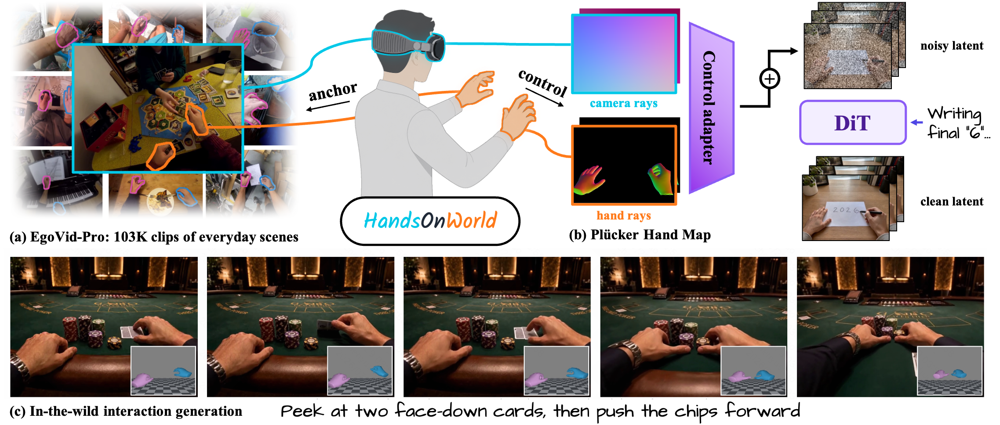

Diverse Interactions from a Shared Scene
Our model enables distinct, object-specific interactions instead of reproducing a single scene-specific motion pattern.
We present HandsOnWorld, a framework for hand-controlled egocentric video generation that learns directly from unconstrained monocular video. Prior hand-controlled generators depend on 3D hand annotations from multi-view or marker-based motion capture, confining them to narrow, instrumented scene distributions.
To bridge this gap, we introduce a protagonist-centered annotation pipeline that filters monocular 3D reconstructions at the action-semantic, image-quality, and 3D-geometric levels, yielding EgoVid-Pro, a dataset of clean, protagonist-only hand trajectories spanning 103K clips and roughly 12M frames across diverse everyday scenes. These unconstrained scenes exhibit substantial camera ego-motion that is largely absent from tabletop captures, exposing the entanglement of camera and hand motion in existing camera-space control signals.
We therefore propose the Plücker Hand Map, which extends Plücker rays from camera geometry to the hand surface, representing hand motion in the same world frame as the camera and disentangling the two motion sources at the representation level. Experiments show that HandsOnWorld surpasses prior hand-controlled generators in visual fidelity and control accuracy, and retains this advantage on out-of-distribution everyday scenes far beyond any laboratory capture.

We propose (a) the protagonist-centric dataset EgoVid-Pro and (b) the Plücker Hand Map, a camera-disentangled hand control representation, enabling (c) accurate 3D hand control and plausible interactions in everyday scenes far beyond tabletop settings (3D hand trajectory shown inset).
Our model enables distinct, object-specific interactions instead of reproducing a single scene-specific motion pattern.
Our model generates coherent interactions between the protagonist and other characters.
We annotate clean, protagonist-only head and hand poses from in-the-wild egocentric videos.
EgoVid-Pro avoids the data scale–label tradeoff and generalizes to diverse everyday scenes.
The Plücker Hand Map disentangles camera ego-motion from hand motion for accurate hand–object contact.
HandsOnWorld generalizes robustly to unseen H2O scenes, objects, and camera intrinsics.
[1] Shuai, X., et al. “Free-form Motion Control: Controlling the 6D Poses of Camera and Objects in Video Generation.” ICCV, 2025.
[2] Wang, Y., et al. “Hand2World: Autoregressive Egocentric Interaction Generation via Free-space Hand Gestures.” arXiv preprint arXiv:2602.09600, 2026.
[3] Xie, L., et al. “Generated Reality: Human-Centric World Simulation Using Interactive Video Generation with Hand and Camera Control.” arXiv preprint arXiv:2602.18422, 2026.
[4] Zhang, C., et al. “Controllable Egocentric Video Generation via Occlusion-Aware Sparse 3D Hand Joints.” ECCV, 2026.
@article{chen2026handsonworld,
title = {HandsOnWorld: Unconstrained Egocentric Video Generation with Camera-Disentangled Hand Control},
author = {Chen, Yushuo and Shi, Xiaoyu and Wu, Xiaoshi and Wang, Xintao and Wan, Pengfei and Liu, Yebin},
journal = {arXiv preprint arXiv:2607.02075},
year = {2026}
}